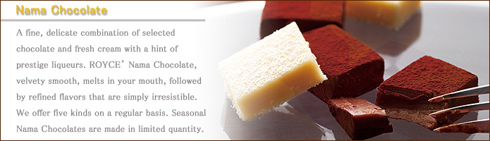

Royce' Nama Chocolate (Bitter)
×

Concocted especially for those who demand a Nama Chocolate with an extra bitter-factor, the Nama Chocolate Bitter is the perfect chocolate for discerning adults who love the fragrant richness of Hennessy brandy and the bitter tang that invariably accompanies it. Here, the lavish usage of world-famous Hennessy V.S.O.P brandy, and the natural sweetness of chocolate - masterfully repressed - perfectly intermingles with the flavour of fresh cream. Contains liquor.
| Storage Temperature | 10 ℃ or below |
|---|---|
| Shelf Life | 1 month |
| Contents | 20 pcs (190g) |
(Source:https://www.royce.com.my/recommended-chocolates/nama-chocolate-ecuador-sweet.html)